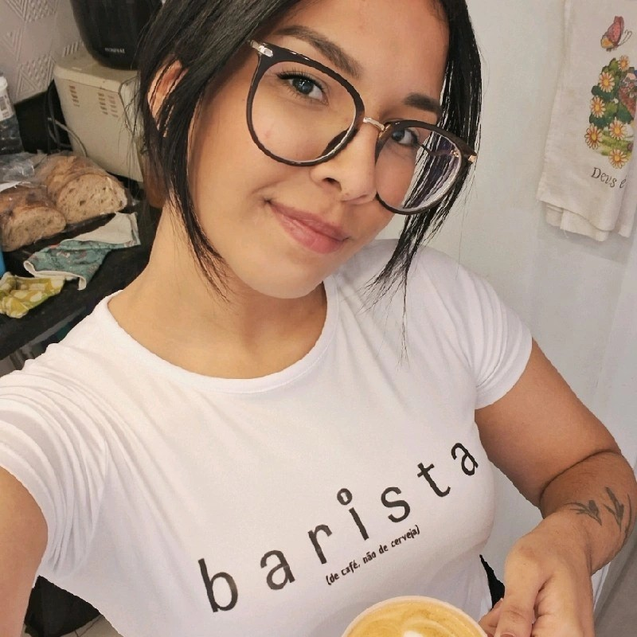

Sobre Mim

Olá! Eu sou Lisandra Brites, uma barista apaixonada por café e arte. Tenho anos de experiência na preparação de cafés especiais e na criação de latte art. Adoro compartilhar meu conhecimento sobre grãos de café e proporcionar uma excelente experiência aos clientes.
Experiência
-
Barista Sênior - Café XYZ
Jan 2020 - Presente
Responsável pela preparação de cafés especiais, criação de latte art e treinamento de novos baristas.
-
Barista - Café ABC
Jan 2018 - Dez 2019
Preparação de diversas bebidas à base de café, atendimento ao cliente e manutenção de equipamentos.
Habilidades
Preparação de café expresso
Detalhes sobre a preparação de café expresso...
Latte art
Detalhes sobre latte art...
Conhecimento profundo sobre grãos de café
Detalhes sobre grãos de café...
Atendimento ao cliente
Detalhes sobre atendimento ao cliente...